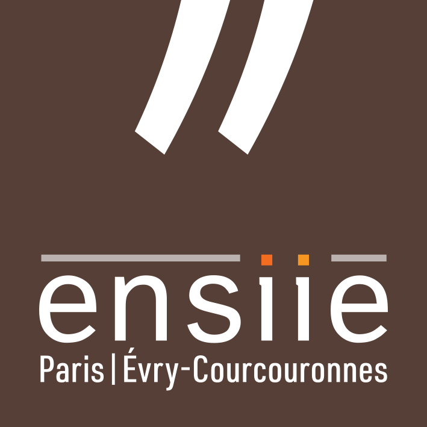
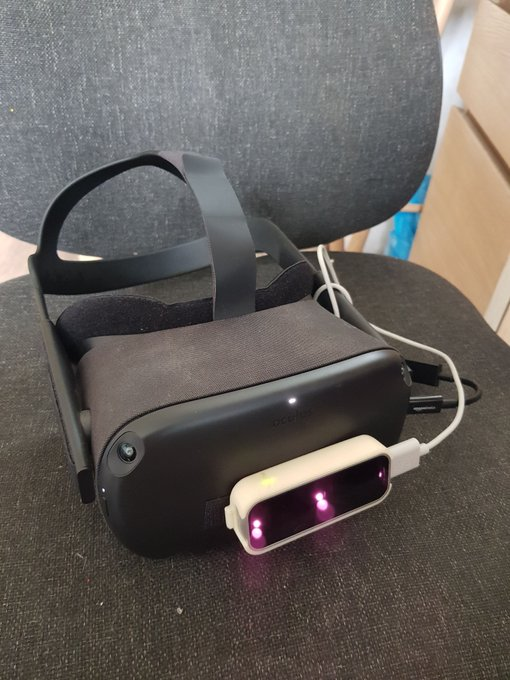
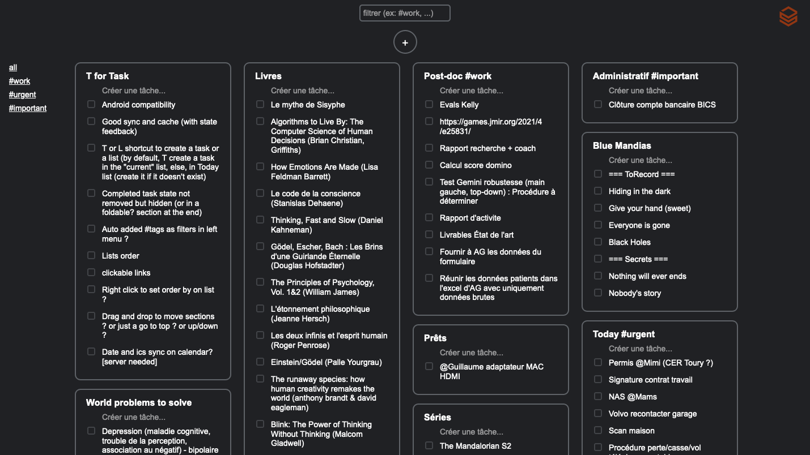
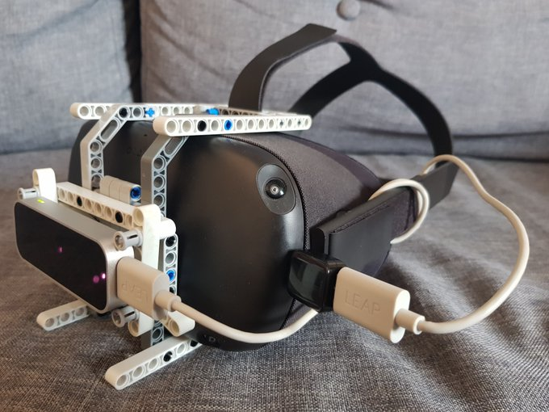
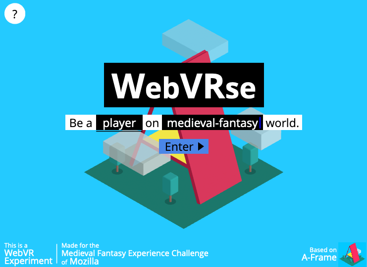
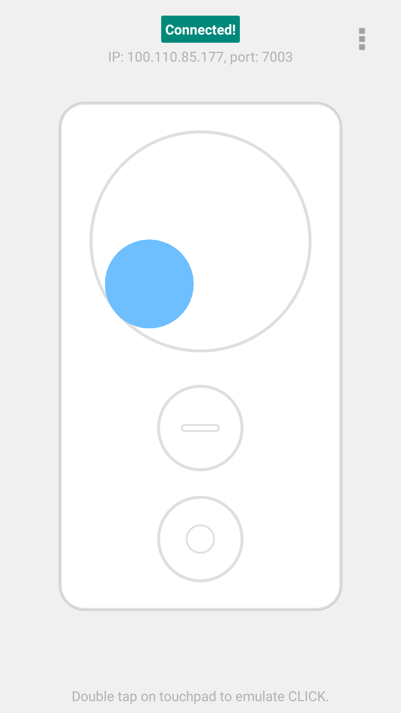

Chargé de recherche et développement
Laboratoire IBISC
juillet 2020 - juin 2022
Évry, France
Laboratoire IBISC
juillet 2020 - juin 2022
Évry, France
Interaction Healthcare / Laboratoire IBISC
octobre 2016 - décembre 2019 · 3 ans 3 mois
Levallois-Perret / Évry, France
Laboratoire IBISC
mars 2016 - septembre 2016 · 7 mois
Évry, France
Polytechnique Montréal
juin 2015 - août 2015 · 3 mois
Montréal, Canada
909c
juin 2014 - août 2014 · 3 mois
Montreuil, France

Université Paris-Saclay
2016 - 2019

Université Paris-Saclay
2015 - 2016

ENSIIE
2013 - 2016

IUT Montreuil - Université Paris VIII
2012 - 2013
WFNR&SOFMER Congress 2020.
Thèse de l’Université Paris-Saclay, Université d’Évry Val-d’Essonne
International Journal of Virtual Reality (IJVR), 17 (2):40-45 [DOI]
19th ACM Virtual Reality International Conference (VRIC), Laval, 22-24 mars 2017. [DOI]
Passionné d’informatique et de technologies innovantes, je mène des développements personnels dans divers domaines pour tester de nouvelles méthodes d’interactions, contourner les limitations des outils actuels, tester diverses architectures, langages et méthodes de programmation ainsi que pour me détendre l’esprit. Je participe aussi à plusieurs communautés liées à l'XR, l'IHM et le Web qui vise à inventer, prototyper et diffuser de nouvelles solutions open-source / libres / Do-It-Yourself (DIY) / P2P / Indie comme alternatives éthiques.
Partisans de l’IndieWeb, j’ai voulu développer un réseau social local-first p2p adapté du protocole Secure Scuttlebutt. L’idée principale est que les données des utilisateurs sont signées et dupliquées entre chaque pair dans un cercle restreint. Les communications sont sécurisées et directes. Il faut donc que les utilisateurs soient connectés au même moment pour se synchroniser, mais ça ne les empêche pas de consulter plus tard ou de publier hors-ligne. Dans l'idéal, l'objectif est de poursuivre le même principe avec WebXR : un local-first cyberspace.
Ce projet de suivi de doigts par EMG grâce au Myo me tient
particulièrement à coeur et est loin d’être terminé. En début de thèse,
j’avais vu les premiers travaux de CTRL.Labs et tenté de les
reproduire dans Unity avec ML-Agents et le Myo du laboratoire car je
pensais déjà à la pertinence de ces travaux dans le cadre de la
rééducation post-AVC et du contrôle de prothèse de bras robotisée.
Cependant, si je comprenais les bases de l’apprentissage machine
(ML), j’étais loin de savoir comment faire. C’est en 2021 que j’ai
recommencé à travailler sur cette idée en contribuant de manière
open-source à pyomyo et NeuroLeap, travaux initiés par @PerlinWarp.
Nous sommes convaincu que c’est le futur de l’Interaction
Homme-Machine (IHM) et l’objectif est de permettre à la communauté
d’être indépendante de Facebook Meta, qui a racheté CTRL.Labs,
possède les brevets de Myo, et qui devrait sortir d’ici peu un
bracelet EMG pour interagir en XR. Malheureusement, l’entreprise ne
fait pas cela par compassion. Les signaux EMG sont une des
meilleures manières d’identifier un individu (fingerprinting). Le
modèle économique étant basé sur la publicité ciblée, on peut
rapidement imaginer les dérives du géant américain. Une partie du
groupe NeuroXR tente donc de développer du matériel DIY
(Do-It-Yourself) car Myo n’est plus commercialisé et les
alternatives restent peu nombreuses, tandis que l’autre partie
s’occupe de développer du logiciel pour permettre le décodage des
signaux électriques de l'activité musculaire des doigts. Je ne suis pas
spécialiste de ML, mais j’ai commencé à m’y mettre avec Python et
Tensorflow. De plus, malgré ses imperfections, le Leap Motion permet
de constituer rapidement une base de données pour faire le lien entre
signaux EMG et mouvements des doigts.

Pour contourner les limitations de l’API passthrough qui n’était
alors pas encore disponible en 2019, j’ai commencé par connecter un
Leap Motion directement au Quest en tant que caméra UVC. Bien que
difficilement accessible dans Unity grâce à un plugin qu’il a fallu
étendre pour supporter le format un peu spécial YUYV interlacé mis à
disposition par Leap Motion, il m’a ensuite suffi de distordre et
d’afficher l’image de chaque caméra à chaque oeil pour permettre le
passthrough. Cependant, plusieurs aspects restent insatisfaisants,
notamment à cause du problème d’alignement. Pour simplifier, la
position du Leap Motion et l’écart entre les caméras sont différents
de la position des yeux et l’écart des yeux, ce qui génère une
adaptation légèrement gênante de notre vision. J’ai par la suite
fait l’acquisition d’une Zed Mini (caméra stéréoscopique couleur) et
ai retenter l’expérimentation. Cependant, je n’ai pas entièrement
réussi à faire du passthrough avec car il y a un problème d’images
par secondes (framerate). Toutes les ~5 secondes, l’image récupérée
de la caméra appliquée à une texture dans Unity freeze. Cela ne
semble pas être en rapport à un problème de mémoire ni de
ramasse-miettes (garbage collection), mais pourrait être lié à une
librairie interne au plugin qui n’est pas mise à jour pour l’USB3.0.
N’étant pas entièrement à l’aise avec le développement Android de
plugin AAR et l’API passthrough d’Oculus Meta étant sortie, j’ai mis le
projet en pause. Maintenant que le casque Lynx a été annoncé,
j'utilise la Zed Mini avec un PC, SteamVR, Unity et OpenCV pour
expérimenter en réalité augmentée.

Depuis toujours, je recherche des applications qui permettent d’améliorer la productivité, la prise de notes et plus globalement la gestion de projet. Une des applications dont j’ai trouvé l’UI/UX très plaisante est Google Keep. Cependant, j’aime l’idée de commencer à s’émanciper des GAFAM, et notamment Google et ses produits. Je voulais faire une application web dans laquelle les données pouvaient être stockée à l’endroit où l’utilisateur le souhaite, et dans mon cadre, à domicile. J’ai donc opté pour RemoteStorage, une librairie qui permet de synchroniser ses données avec un serveur que peut choisir l’utilisateur à travers un protocole spécifique.
Afin d'aider un utilisateur du Leap Motion (LM) qui avaient exposé ses problèmes sur le forum de LM, j'ai apporté quelques modifications au Leap Motion Unity Core Plugin pour faciliter son utilisation à distance. J'ai tout simplement ajouté une libraire C# de Websocket pour se connecter au serveur déjà déployé par LM qui sont normalement utilisés par Leap.js. Ensuite, il a fallu reconvertir les données json pour qu'elles correspondent aux structures C#, et notamment reconstituer les quaternions à partir des bases.

Avant que le suivi de main soit disponible sur Quest, j’avais connecté un Leap Motion directement au casque autonome. Comme le LM ne dispose pas de SDK compatible Android, il a fallu utiliser l’application VirtualHere qui permet d’utiliser des appareils USB sur le réseau comme s'ils étaient connectés en local. Installé sur le casque (pour rappel sous Android) et un PC, connecté par Wifi (5GHz pour une latence minimale), le LM est fonctionnel sur le PC comme s'il était branché en local. Ensuite, il suffit de récupérer les données du LM via le serveur websocket déjà déployé sur le PC dans une expérience WebXR sur Quest en l’occurence basé sur Aframe.
Lors de mes études, j'ai participé à une game jam de 48h dont le thème était "I have a dream!" dans laquelle nous avons remporté 2 prix : le stick adhésif (meilleur gameplay) et le coup de coeur du public.
Codea dispose d'une fonctionnalité nommée AirCode qui permet d'éditer son code dans un navigateur web et de hot-reload le projet à chaque modification. Comme à mon habitude, dès qu'un système ne me satisfait pas entièrement, je le reconstruis. J'ai donc utilisé ma librairie de serveur web en lua, expressjs, ainsi que le monaco editor. J'implémente cette fois-ci un véritable hot-reload qui permet de conserver l'état du projet malgré le rechargement d'une partie du code. Je me heurte cependant à quelques problèmes, notamment le fait de devoir redévelopper des fonctions Codea qui sont par défaut liée au projet dans lequel elles sont utilisées. Je n'ai jamais terminé de reconstruire l'entièreté de la sandbox viable.
Pour permettre de faciliter la communication entre mes projets dans Codea et d'autres projets web, natifs et XR. Je redéveloppe un serveur web simple en Lua basé sur les coroutines. Celui-ci sera d'ailleurs utilisé dans AirCodea.

Avant la sortie de Mozilla Hubs, les briques logicielles étaient déjà réunis et j’avais mis en place sur glitch.com un site qui permettait de déployer un environnement virtuel persistant et social (avatar et voix via WebRTC) codé avec Aframe. La spécificité était qu’un responsable (master) pouvait via son PC modifier la scène en temps réel et ajouter des objets juste par drag&drop d’objets disponibles sur poly.google.com et sketchfab.com dans l’Aframe inspector. Il était aussi possible de visiter les environnements sans l’aspect social.
En 2018, les seuls casques que je possédais étaient un Samsung Gear VR et un (Google) Daydream View que j’utilisais avec mon Samsung S8 (premier téléphone qui était compatible VR/AR, qui est encore celui que j’utilise en 2022 !). Mais ayant eu l’occasion de tester une CAVE et un peu plus tard l’HTC Vive, je souhaitais avoir accès à de la 6dof. Grâce à l’API ARCore, c’est devenu possible. Cependant, les ressources demandées au smartphone (double rendu VR + SLAM propriétaire avec ARCore) sont assez élevées, ce qui n’est pas idéal.
Premiers tests d'interactions à distance avec des Leap Motion et découverte de la High Level API réseau de Unity maintenant tombée en désuétude pour que sorte en 2021-2022 Netcode for GameObjects (toujours en développement au moment où j'écris ces lignes...).

Avant d’avoir un Daydream View de Google, je voulais commencer à développer des applications de réalité virtuelle et n’ayant pas de deuxième téléphone sous Android pour utiliser le Controller Emulator proposé par Google, je l’ai redéveloppé sous Unity pour pouvoir l’utiliser sur un vieux Iphone 4. La difficulté majeure était de faire de la rétro-ingénierie de la communication réseau, mais avec Wireshark et un peu de patience plus un carnet de note, rien n’est impossible. De plus, l’Iphone 4 n’étant pas très puissant, il a fallu faire un peu d’optimisation mémoire pour éviter l’allocation du ramasse-miettes (garbage collector).
Nous avons développé une application d'aménagement de cuisine en réalité virtuelle réalisée dans le cadre de la filière Jeux Vidéos, Interactions et Collaborations Numériques (JIN) en partenariat avec Telecom SudParis et l’ENSIIE. A l’époque, nous développons sur Unity pour l’Oculus DK2 et Cardboard. Pour pallier au problème du contrôle de l’application, nous utilisons un smartphone comme manette (télécommande) 3dof tactile. Ce n’est que quelques mois plus tard que nous verrons apparaître les manettes 3dof pour les casques Samsung Gear VR et Daydream View de Google (et d’autres par la suite comme le Mirage Solo de Lenovo/Google). Nous avons eu l'opportunité de faire deux présentations du projet directement à IKEA.
Avec l'association de réalité de virtuelle de l'ENSIIE nommée RealitIIE, nous participons pour la deuxième année consécutive au concours de RV de Laval Virtual. Cette année, l'objet mystère de mon équipe est un jardin zen. Contrairement à 2014, je suis plus expérimenté et prends le rôle de lead dev. Cependant, le matériel (oculus dk2), nos connaissances UX et en optimisation pour la VR sont encore limités et notre expérience suscite un peu de cybermalaise...
Dans Codea, il est possible de préciser que d'autres projets installés en local doivent être chargé avant le projet principal comme dépendance. Afin de faciliter les collaborations et la gestion de version, j'avais développé Required qui permet à la fois de publier ses projets sur Gist (de Github) mais aussi de charger des projets sur Gist comme dépendances, comme dans le web ou il suffit de mettre dans la section head un lien vers une librairie javascript.
Première compétition à base de réalité virtuelle à laquelle j'ai eu l'occasion de participer. Suite à mon DUT, j'avais de solides bases en programmation qui m'ont rapidement permis de prendre en main unity et de contribuer à cette compétition lors de ma première année d'école d'ingénieur. Notre objet mystère : un rongeur volant !
Codea est un IDE sur iPad avec des fonctionnalités semblables à Processing. Comme celui-ci n'était pas extensible, j'avais commencé à le recréer, mais dans celui-ci. J'ai donc commencé par coder un visualiseur de code, dans lequel le code est parsé pour obtenir de la coloration syntaxique. De plus, grâce à la programmation meta, je pouvais lancer des projets dans le codea dans codea. J'ai malheureusement arrêté le projet avant de passer à l'édition de texte.
Ce projet permet de synchroniser des projets entre Codea et Dropbox. En particulier, lorsque le projet est modifié, par exemple sur un pc avec le dossier synchroniser dropbox, SyncCodea le détecte, télécharge les modifications et relance le projet.
A cette époque, je développe sur iPad via Codea (une IDE avec des fonctionnalités semblables à Processing). Codea intègre un outil de synchronisation des projets via Dropbox, mais à l'époque, celui-ci n'est pas encore stable. Je commence alors à le développer (il deviendra SyncCodea en 2014), et pour ce faire, il me faut comprendre et accéder à l'api dropbox en Lua. Pendant les développements, j'en profite aussi pour m'attaquer à l'api de Github pour faciliter la gestion de version. L'année d'après, je mets à jour GithubAPI (qui dans mes souvenirs avait changé de méthode d'authentification avec OAuth2.0).